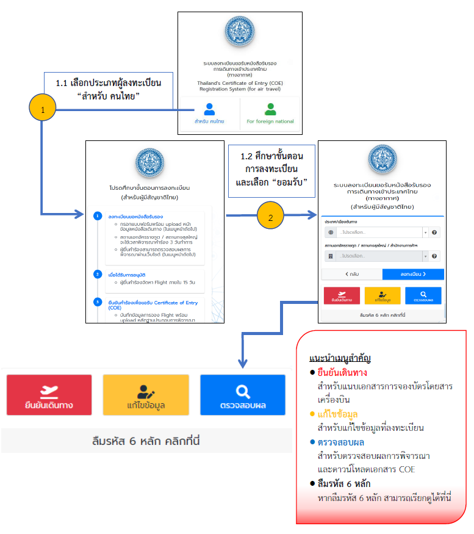
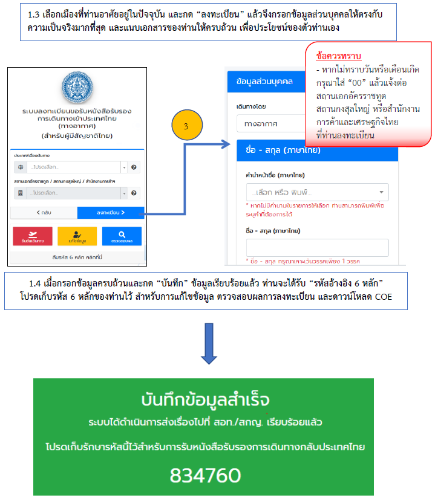
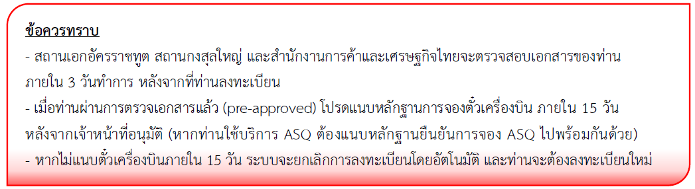
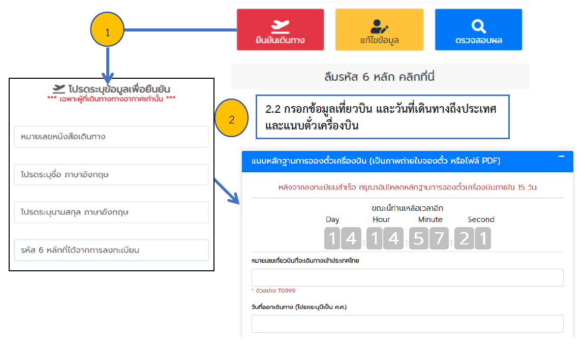
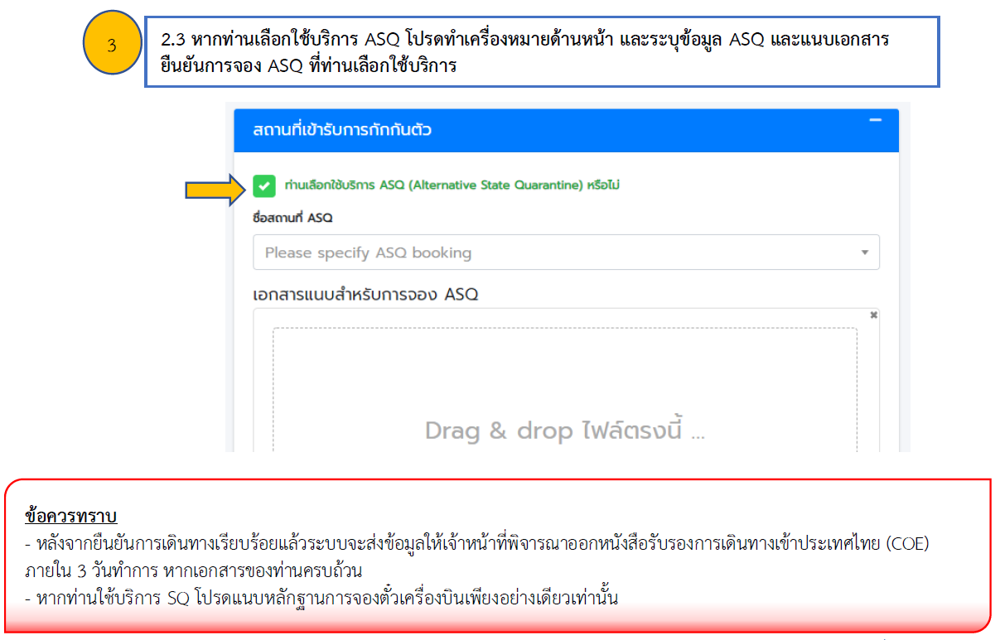
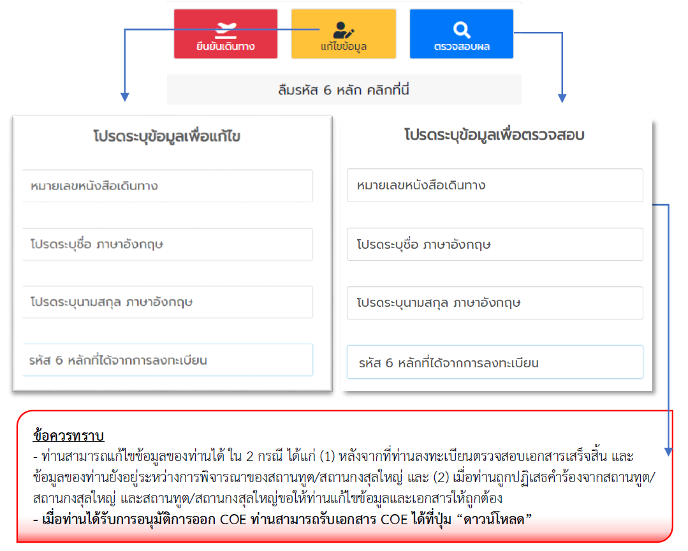
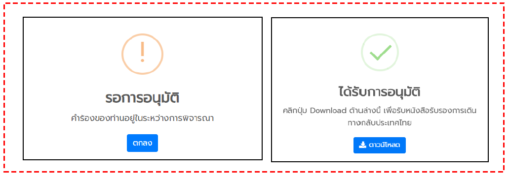
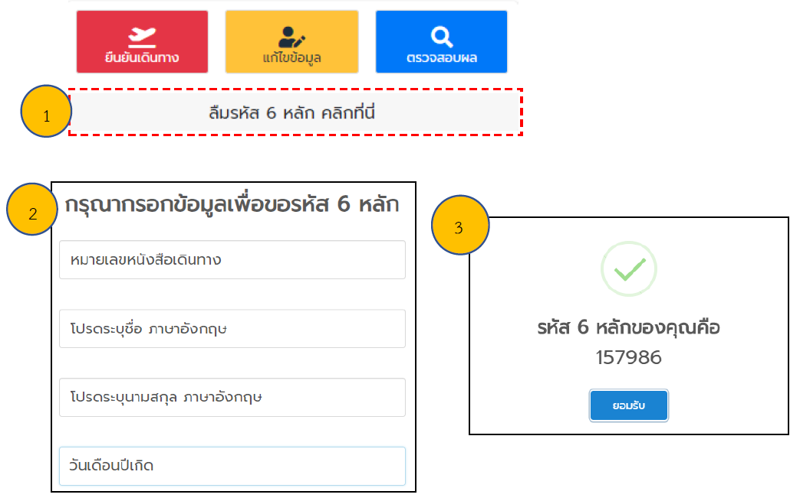

การลงทะเบียนขอรับหนังสือรับรองเพื่อเดินทางเข้าราชอาณาจักร (ผ่านด่านทางอากาศ) สำหรับผู้มีสัญชาติไทย
ตามมาตรการป้องกันโรคสำหรับผู้เดินทางเข้ามาในราชอาณาจักรเพื่อป้องกันการแพร่ระบาดของโรควิด - 19 แนบท้ายคำสั่งศูนย์บริหารสถานการณ์การแพร่ระบาดของโรคติดเชื้อไวรัสโคโรนา (โควิด - 19)ที่ 8/2563 ลงวันที่ 31 กรกฎาคม 2563 กำหนดให้ผู้มีสัญชาติไทยที่จะเดินทางเข้ามาในราชอาณาจักรต้องมีเอกสาร ดังนี้
- หนังสือที่รับรองว่าเป็นบุคคลที่เดินทางเข้ามาในราชอาณาจักรได้ (Certificate of Entry - COE)
- ใบรับรองแพทย์ที่ยืนยันว่าผู้เดินทางมีสุขภาพเหมาะสมต่อการเดินทาง (Fit to Fly Health Certificate/ Fit to Travel Health Certificate)
- กรณีผู้เดินทางมีใบรับรองแพทย์ยืนยันว่าผู้เดินทางไม่มีเชื้อโรคโควิด - 19 (Medical certificate with a laboratory result indicating that COVID - 19 is not detected โดยวิธี RT-PCR ระยะเวลาไม่เกิน 72 ชั่วโมงก่อนการเดินทางสามารถแนบเอกสารเพิ่มตามความสมัครใจเพื่อความปลอดภัยของตนเอง และผู้ร่วมเดินทาง
ผู้เดินทางสามารถศึกษาขั้นตอนการลงทะเบียนโดยละเอียดได้จากคู่มือการลงทะเบียนเพื่อขอ
หนังสือรับรองฯ ตามที่ปรากฏบนเว็บไซต์ลงทะเบียน หรือ coethailand.mfa.go.th หากมีข้อสงสัยเพิ่มเติม
กรุณาติดต่อสถานเอกอัครราชทูต สถานกงสุลใหญ่ หรือส านักงานการค้าและเศรษฐกิจไทย (ไทเป)
ตามข้อมูลที่ปรากฏบนเว็บไซต์ลงทะเบียน และโปรดกรอกข้อมูลของท่านตามความเป็นจริงให้ถูกต้อง
และครบถ้วน เพื่อประโยชน์ในการเดินทางกลับประเทศไทยของท่าน
ข้อแนะนำสำหรับการลงทะเบียนขอรับหนังสือรับรองเพื่อเดินทางเข้าราชอาณาจักร (ผ่านด่านทางอากาศ)
- ก่อนการลงทะเบียน ผู้เดินทางควรเตรียมสำเนาหนังสือเดินทางในรูปแบบไฟล์ภาพ (.JPEG)
หรือไฟล์PDF เพื่อเตรียมแนบข้อมูลเข้าสู่ระบบ
- ระบบลงทะเบียนแบ่งออกเป็น 2 ขั้นตอน ดังนี้
- 2.1 ขั้นตอนที่ 1 การลงทะเบียนเพื่อตรวจสอบเอกสารของผู้เดินทาง (Pre-approve)
- ผู้เดินทางกรอกข้อมูลส่วนบุคคลและแนบไฟล์ภาพหนังสือเดินทางเข้าไปในระบบ
- เมื่อลงทะเบียนเรียบร้อยแล้ว ผู้เดินทางจะได้รับหมายเลขอ้างอิง 6 หลัก
- สถานเอกอัครราชทูต สถานกงสุลใหญ่ และสำนักงานการค้าและเศรษฐกิจไทย จะดำเนินการ
ตรวจสอบเอกสารของผู้เดินทางและอนุมัติ (pre-approve)คำร้องภายใน 3วันทำการ
- ผู้เดินทางสามารถแก้ไขข้อมูลหรือแนบเอกสารเพิ่มเติมได้ที่เมนู “แก้ไขข้อมูล”
- 2.2 ขั้นตอนที่ 2 การขอรับหนังสือรับรองฯ (COE) หลังจากที่ได้รับ Pre-approve แล้ว
- เมื่อผ่านการตรวจเอกสารแล้ว (pre-approved) ผู้เดินทางจะต้องจัดหาบัตรโดยสารเครื่องบิน
และเอกสารอื่น ๆ เช่น หลักฐานยืนยันการจองที่พัก ในกรณีที่เลือกใช้บริการ ASQ ภายใน 15 วัน
- แนบบัตรโดยสารเครื่องบิน และเอกสารอื่น ๆ ในเมนู “ยืนยันเดินทาง” ภายใน 15 วัน
หากผู้เดินทางไม่ยืนยันการเดินทางภายใน 15 วัน ระบบจะลบข้อมูลที่ได้ลงทะเบียนไว้และผู้เดินทางจะต้อง
ลงทะเบียนกรอกข้อมูลและแนบเอกสารทั้งหมดใหม่อีกครั้ง
- สถานเอกอัครราชทูต สถานกงสุลใหญ่ และสำนักงานการค้าและเศรษฐกิจไทยจะพิจารณา
เอกสารและออกหนังสือรับรองฯ(COE) ภายใน 3วันทำการ หลังจากผู้เดินทางส่งเอกสารยืนยันการเดินทาง
- เมื่อผู้เดินทางได้รับอนุมัติหนังสือรับรอง (COE) แล้ว สามารถดาวน์โหลด COE ได้โดยตรง
จากเว็บไซต์ลงทะเบียน โดยสามารถตรวจสอบผลและดาวน์โหลด COE ได้ที่เมนู “ตรวจสอบผล”
- หลังได้รับหนังสือรับรองฯ (COE) แล้วผู้เดินทางจะต้องจัดเตรียมเอกสารเพื่อแสดงต่อสายการบิน
ที่เคาน์เตอร์เช็คอิน และด่านควบคุมโรค ณ ท่าอากาศยาน เมื่อเดินทางถึงประเทศไทย ดังนี้
- 3.1 หนังสือเดินทาง (Passport)
- 3.2 หนังสือรับรองฯ (COE) ที่ลงนามยินยอมปฏิบัติตามเงื่อนไขและข้อกำหนดของทางราชการ
- 3.3 ใบรับรองแพทย์ที่ยืนยันว่าผู้เดินทางมีสุขภาพเหมาะสมต่อการเดินทาง (Fit to Fly Health
Certificate) อายุไม่เกิน 72 ชั่วโมงก่อนการเดินทาง ทั้งนี้ ผู้เดินทางไม่สามารถใช้ใบรับรองแพทย์
แบบอิเล็กทรอนิกส์เพื่อแสดงต่อด่านควบคุมโรคได้
- 3.4 กรณีผู้เดินทางมีใบรับรองแพทย์ยืนยันว่าผู้เดินทางไม่มีเชื้อโรคโควิด - 19 (Medical
certificate with a laboratory result indicating that COVID - 19 is not detected) โดยวิธี RT-PCR
ระยะเวลาไม่เกิน 72 หรือ 96 ชั่วโมงก่อนการเดินทาง สามารถแนบเอกสารเพิ่มตามความสมัครใจ
หรือตามข้อกำหนดของสายการบินที่ผู้เดินทางใช้บริการ
- 3.5 หากผู้เดินทางเลือกใช้บริการสถานที่กักกันแห่งรัฐทางเลือก (Alternative State
Quarantine – ASQ) ผู้เดินทางต้องมีหลักฐานยืนยันการจอง ASQ ที่ระบุวันเข้าพักในวันที่เดินทางถึงประเทศไทย
- 3.6 แบบฟอร์ม ต.8 (คำถามเกี่ยวกับสุขภาพของผู้เดินทางเข้ามาในราชอาณาจักร) โดยสามารถ
ดาวน์โหลดแบบฟอร์ม ต.8 ได้ที่ แบบฟอร์ม ต.8
- ระหว่างการเดินทาง โปรดเก็บรักษาเอกสารตามข้อ 3 ให้ครบถ้วน เนื่องจากผู้เดินทางจะต้อง
แสดงเอกสารดังกล่าวต่อเจ้าหน้าที่ตรวจคนเข้าเมืองและเจ้าหน้าที่ด่านควบคุมโรคเมื่อเดินทางถึงประเทศไทย
หมายเหตุ : หากพบปัญหาการใช้งาน กรุณาติดต่อสถานเอกอัครราชทูต สถานกงสุลใหญ่ หรือสำนักงานการค้า
และเศรษฐกิจไทย ที่ท่านลงทะเบียนตามช่องทางที่ระบุในแบบฟอร์ม
คู่มือการลงทะเบียนขอรับหนังสือรับรองเพื่อการเดินทางเข้าราชอาณาจักร
สำหรับผู้มีสัญชาติไทย พร้อมภาพประกอบ ผ่านเว็บไซต์ https://coethailand.mfa.go.th
หมายเหตุ - ขั้นตอนการลงทะเบียนที่ปรากฏในเอกสารนี้เป็นตัวอย่างการกรอกข้อมูลการเดินทาง ข้อมูลส่วนบุคคล รหัสเอกสาร
และข้อมูลการติดต่อที่ปรากฏเป็นข้อมูลสมมติ
หากพบปัญหาการใช้งาน กรุณาติดต่อสถานเอกอัครราชทูต สถานกงสุลใหญ่ หรือสำนักงานการค้าและเศรษฐกิจไทย
ที่ท่านลงทะเบียนตามช่องทางที่ระบุในแบบฟอร์ม
1. การลงทะเบียนขอรับหนังสือรับรองการเดินทางเข้าราชอาณาจักร (COE)



2. ขั้นตอนการยืนยันการเดินทางและแนบบัตรโดยสารเครื่องบิน
- 2.1 เลือกเมนู “ยืนยันเดินทาง” และกรอกข้อมูลเพื่อยืนยันตัวตน ได้แก่ หมายเลขหนังสือเดินทาง ชื่อภาษาอังกฤษ นามสกุลภาษาอังกฤษ และ รหัสอ้างอิง 6 หลัก


3. การแก้ไขข้อมูล และการตรวจสอบผลเพื่อขอรับเอกสาร
- 3.1 เลือกเมนู “แก้ไขข้อมูล” เพื่อแก้ไขข้อมูล และ เมนู “ตรวจสอบผล” เพื่อตรวจสอบผลการลงทะเบียน
กรอกข้อมูลเพื่อยืนยันตัวตน ได้แก่ หมายเลขหนังสือเดินทาง ชื่อภาษาอังกฤษ นามสกุลภาษาอังกฤษ และ รหัสอ้างอิง 6 หลัก


สถานะของผู้ลงทะเบียน
- “รอการอนุมัติ” หมายถึง ข้อมูลของท่านอยู่ระหว่างการพิจารณาของสถานเอกอัครราชทูต สถานกงสุลใหญ่ หรือสานักงานการค้าและเศรษฐกิจไทย ท่านสามารถแก้ไขได้
- “ได้รับการอนุมัติ” หมายถึง ท่านได้รับ COE จากสถานทูต/สถานกงสุลใหญ่แล้ว และสามารถรับเอกสารได้ที่ เมนู “ดาวน์โหลด”
4. การเรียกดูข้อมูลรหัสอ้างอิง 6 หลัก (กรณีลืมรหัสอ้างอิง)
เลือกเมนู “ลืมรหัส 6 หลัก คลิกที่นี่” และ กรอกข้อมูลเพื่อยืนยันตัวตน ได้แก่ หมายเลขหนังสือเดินทาง ชื่อภาษาอังกฤษ นามสกุลภาษาอังกฤษ และ วันเดือนปีเกิด จากนั้นเลือกเมนู “ค้นหา”

5. การเดินทางเข้าราชอาณาจักร
- 5.1 หลังได้รับหนังสือรับรองฯ (COE) จัดเตรียมเอกสาร เพื่อแสดงต่อสารการบินที่เคาน์เตอร์เช็คอิน ดังนี้
- หนังสือเดินทาง (Passport)
- หนังสือรับรองฯ (COE)
- ใบรับรองแพทย์ที่ยืนยันว่าผู้เดินทางมีสุขภาพเหมาะสมต่อการเดินทาง (Fit to Fly Health Certificate) อายุไม่เกิน 72 ชั่วโมงก่อนการเดินทาง (ไม่สามารถใช้แบบอิเล็กทรอนิกส์ได้)
- หากผู้เดินทางเลือกใช้บริการสถานที่กักกันแห่งรัฐทางเลือก (Alternative State Quarantine – ASQ) ผู้เดินทางต้องมีหลักฐานยืนยันการจอง ASQ ที่ระบุวันเข้าพักในวันที่เดินทางถึงประเทศไทย
- เพื่อความรวดเร็วในการตรวจสอบเอกสารที่ด่านควบคุมโรค ณ ท่าอากาศยานในประเทศไทย ผู้เดินทางอาจเตรียมแบบฟอร์ม ต.8 (คาถามเกี่ยวกับสุขภาพของผู้เดินทางเข้ามาในราชอาณาจักร) ล่วงหน้า โดยสามารถดาวน์โหลดแบบฟอร์ม ต.8 ได้ที่ คลิกที่นี่
- 5.2 เมื่อเดินทางถึงประเทศไทย ผู้เดินทางจะต้องแสดงเอกสารตามข้อ 5.1 ต่อเจ้าหน้าที่ตรวจคนเข้าเมืองและเจ้าหน้าที่ด่านควบคุมโรค